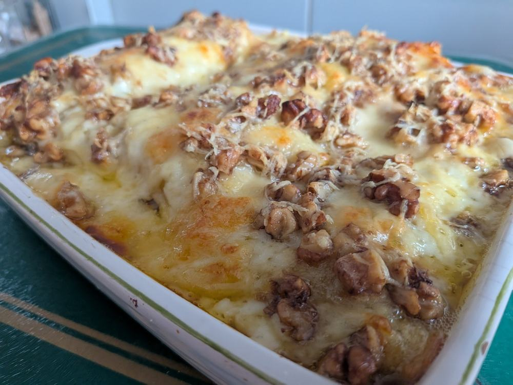
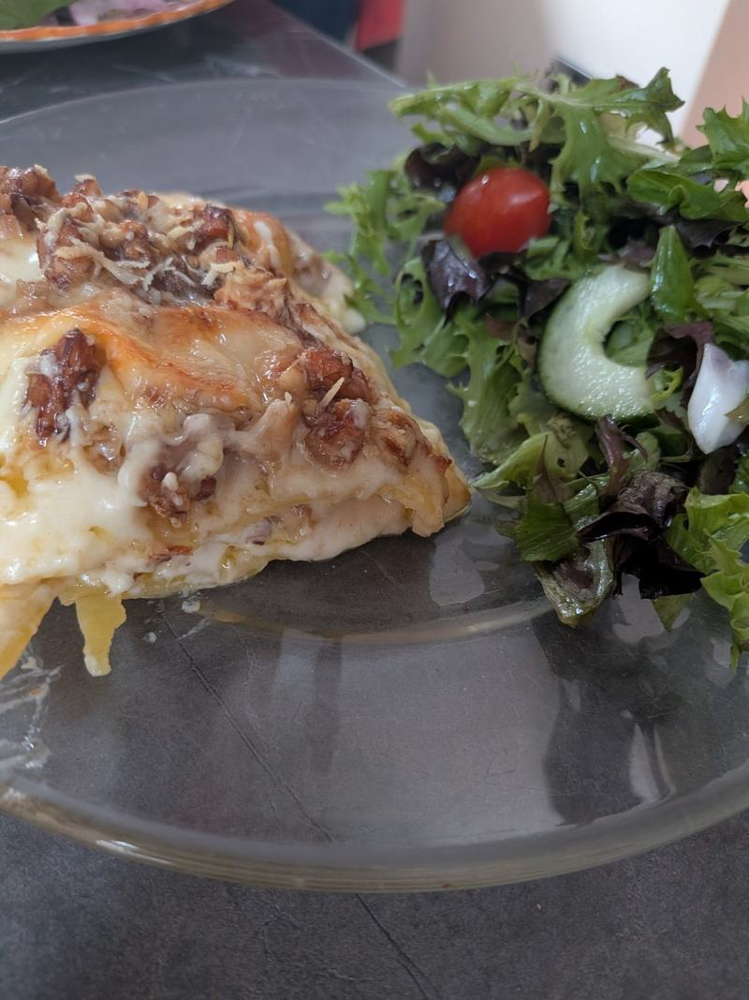

IBS GIRL · FROM THE BLOG
Gluten-Free Walnut Lasagne – Inspired by a Venetian Murder Mystery
Sometimes inspiration for something delicious comes from the most unexpected places – even a murder mystery!

The Inspiration Behind My Walnut Lasagne
I started reading a series of murder mysteries set in Venice by Philip Gwynne Jones, and in one of his books, The Venetian Game, the hero made a walnut lasagne.
I remember thinking, “Wow, that sounds nice!” I wondered if it was actually a real dish, so I Googled it and discovered that it was.
I decided to have a go at making it myself.
The recipe I found used an Italian cheese that I had never heard of, and I couldn't find it in my local supermarket. I would have needed to go to a specialist deli to get it, so I decided to make the recipe my own.
I swapped the Italian cheese for Emmental and only used one type of Parmesan, but I kept the mozzarella because it works really well in the dish.
I had never used gluten-free lasagne sheets before, but I found some in my local Tesco and decided to give them a try. I wasn't quite sure how they would turn out, but thankfully they worked really well and the finished lasagne tasted lovely.
It's a really nice recipe, and I'm glad I gave it a try.

The Venetian Game by Philip Gwynne Jones.
Who would have thought that reading a murder mystery could inspire me to try something new in the kitchen?
If you’d like to make it yourself, here’s my gluten-free version: